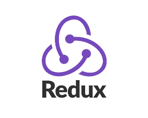
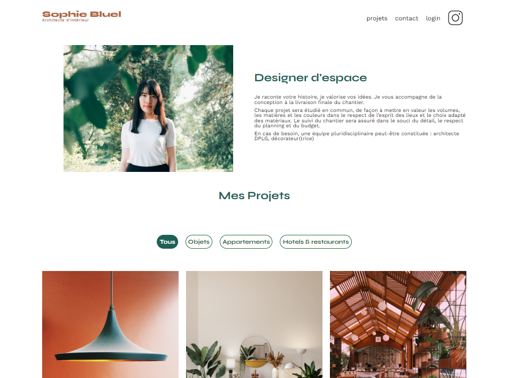
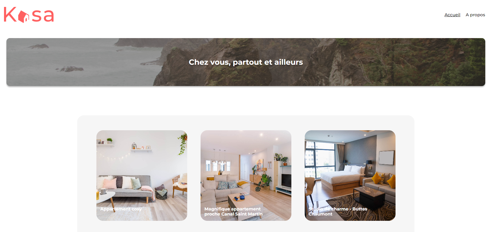
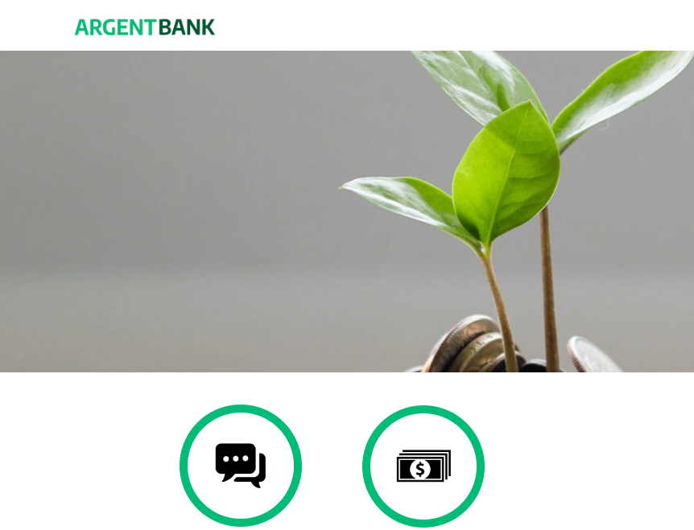

Bienvenue sur mon portfolio!
Je suis Christelle, développeuse et intégratrice web
passionnée par la création d'expériences utilisateur
dynamiques et esthétiques. J'ai maîtrisé divers langages
de programmation et frameworks, et j'adore relever de
nouveaux défis en apprenant les dernières technologies.
Explorez mon portfolio pour découvrir les projets sur
lesquels j'ai travaillé. N'hésitez pas à me contacter
pour discuter de nouvelles opportunités ou
collaborations.
Compétences

Mes projets


